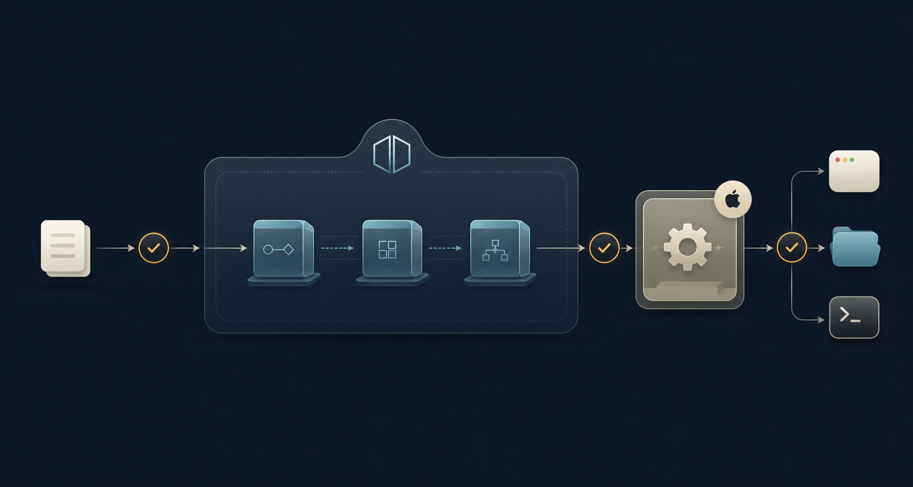

Plan: Anodyne Refactor and Test Coverage

Purpose
Turn the current 1,457-line Hammerspoon entrypoint into a testable module named Anodyne, leaving the root init.lua as a thin composition loader. Execute the migration autonomously with a pinned, project-local Lua toolchain, Busted, and LuaCov. Every implementation choice, transition, fallback, review outcome, and terminal blocker is predetermined below; no product or engineering question is routed back to the owner during execution.
Problem
The current init.lua eagerly owns configuration, frame mathematics, transactional window changes, undo state, modal routing, presentation, timers, canvases, filters, hotkeys, and reload cleanup. Its behavior is mostly private local functions, and loading it creates native Hammerspoon resources immediately. A large mechanical move would be difficult to verify and could silently regress reload safety, window targeting, rollback, or global key capture.
Solution
First establish a strict fake hs runtime and behavior-level characterization suite. Then relocate the implementation behind an explicit Anodyne lifecycle facade and extract one dependency layer at a time: pure calculations, transactional actions, state/input/presentation, controller orchestration, and finally the Hammerspoon adapter. Keep production code compatible with Lua 5.4; run Busted outside Hammerspoon; automatically attempt only the bounded, non-window-mutating Hammerspoon smoke checks defined here.
-- final root init.lua
local previous = { anodyne = rawget(_G, "Anodyne"), legacy = rawget(_G, "WindowManager") }
_G.Anodyne = require("Anodyne").replace({ hs = hs, previous = previous })
_G.WindowManager = nilTarget Architecture
init.luaload and start only
Anodyne/init.luafacade and lifecycle
Anodyne/controller.luastate and orchestration
Anodyne/adapter/hammerspoon.luaall hs calls and resources
Anodyne/core/geometry.luaAnodyne/core/history.luaAnodyne/core/keymap.luaAnodyne/view.lua + Anodyne/window_actions.luaModule contracts
| Module | Owns | Must not own |
|---|---|---|
Anodyne/init.lua | Inert facade with new({hs, config, modules}) and replace({hs, previous, config}); previous is a keyed set of modern/legacy instances; instances expose idempotent :start(), :stop(), and :isRunning() | Window algorithms, menu/key decisions, or module-load side effects |
Anodyne/config.lua | Defaults, validation, immutable action/preset metadata and derived maps | Mutable session state or hs |
Anodyne/core/geometry.lua | Copy/equality/rounding, clamp, aspect/corner/resize targets, grid snapping | Windows, screens, history, globals |
Anodyne/core/history.lua | Per-window bounded transitions, continuity and invalidation decisions | Calling setFrame or discovering screens |
Anodyne/core/keymap.lua | Raw key/flags + current mode → intent | Rendering, timers, or action execution |
Anodyne/window_actions.lua | Focus resolution, snapshots, authoritative readback, exact rollback, undo/reset and action outcomes | Menus, canvases, hotkey registration |
Anodyne/view.lua | Menu model and modal text from config/state | Creating native UI objects |
Anodyne/controller.lua | Runtime/modal state, intent orchestration, scheduling policy, feedback policy | Direct global hs access |
Anodyne/adapter/hammerspoon.lua | Native object creation, callback wiring, timers, filters, event tap, canvas, menu, disposal | Domain decisions already represented as intents/actions |
The runtime instance owns every mutable value: native resources, last-focused window, modal session, and frame history. Pure modules receive state/config explicitly and retain no module-level mutable state. Configuration is deep-copied per instance, validates known keys/types, replaces list values atomically, and is immutable after construction. modules is an internal composition seam. The only final global is _G.Anodyne, holding the active instance.
Spoon Distribution Decision
Anodyne/ module tree. Public distribution, license selection, author/homepage metadata, release ZIPs, and repository submission require a separate future plan and are never raised as questions during this execution.| Dimension | Distributable Spoon benefit | Cost or constraint |
|---|---|---|
| Installation and use | Native Hammerspoon convention: install Anodyne.spoon, call hs.loadSpoon("Anodyne"), then spoon.Anodyne:start(). | Requires a packaged directory/ZIP, release/version policy, metadata, license, and user documentation. |
| Lifecycle | Standard :init(), :start(), :stop(), and optional :bindHotkeys() make ownership explicit. | Loading must be inert; current defaults, hotkeys, and configuration become a public compatibility surface that should not be frozen during mechanical extraction. |
| Internal modules | The same pure logic and controller can be reused. | Official Spoon guidance says Spoon-internal Lua files are loaded with dofile(hs.spoons.resourcePath(...)), not ordinary require(). A Spoon-first layout would complicate standalone imports, tests, and coverage paths. |
| Sharing | Easy distribution to other Hammerspoon users and possible submission to the official Spoons repository. | Creates maintenance obligations across Hammerspoon versions and demands stable configuration, hotkey, documentation, and release contracts. |
| Source ownership | A generated bundle can contain everything users need. | Hand-maintaining both Anodyne/ and Spoons/Anodyne.spoon/ would create drift. The module tree must remain canonical and the bundle must be generated and tested. |
To preserve the future option, leaf modules return tables, receive dependencies explicitly, and avoid resolving their own source paths. Composition accepts an explicit module table plus hs. A later distribution plan may generate a bundle from canonical source and add a thin resource-path loader without changing domain code.
Behavior Contracts to Preserve
| ID | Contract | Current evidence |
|---|---|---|
| A-LIFE-01 | Repeated load/start/stop leaves exactly one active registration set and no stale timers, taps, filters, canvases, menus, or hotkeys. | init.lua:148–210, 1408–1457 |
| A-WIN-01 | Outside modal: focused → remembered → frontmost fallback. Inside modal: remain pinned to the entry window; never fall through to another window if it becomes invalid. | init.lua:304–354, 803–825 |
| A-FRAME-01 | Clamp requested frames to usable screen bounds and configured minimums, including screens smaller than those minimums. | init.lua:434–452 |
| A-TXN-01 | Record authoritative readback, reject ignored changes, roll back inexact exact-writes, and invalidate history when verification or rollback fails. | init.lua:458–564 |
| A-HIST-01 | History is per-window, copied, bounded to depth three, reset on discontinuity/external mutation, and cleared when a window is destroyed. | init.lua:414–431, 587–642, 1415–1422 |
| A-SCREEN-01 | Undo/reset require the original screen identity and unchanged fullFrame(); usable placement continues to use frame(). | init.lua:376–412, 566–585 |
| A-KEY-01 | Preserve key precedence, modifier rules, arrow/Fn exception, navigation, invalid-key feedback, and event consumption. | init.lua:1047–1274 |
| A-UI-01 | Preserve menu order/titles, modal content, current size, status/error policy, delays, and active-vs-inactive action feedback. | init.lua:885–1045, 1280–1401 |
Autonomous Decision Register
These decisions are binding for Milestones 1–7. Agents do not ask the owner to choose among alternatives. When a gate cannot pass, follow its fallback; when the fallback is exhausted, record the named terminal state, preserve the worktree, and stop without advancing.
Architecture and scope decisions
| ID | Trigger | Predetermined decision | Evidence / terminal rule |
|---|---|---|---|
| D-SCOPE-01 | A behavior cleanup or bug fix is discovered. | Preserve observed behavior. Milestones 1–7 allow no intentional changes to commands, frames, strings, ordering, timing, targeting, or error policy. Log suspected bugs as post-parity work. | Any unexplained characterization delta is REWORK. No approval question is asked. |
| D-API-01 | The Anodyne facade is created. | require("Anodyne") is inert. new({hs, config, modules}) returns a stopped instance; replace({hs, previous, config}) deduplicates the keyed modern/legacy prior set, tears it down, creates/starts the replacement, and returns it. Successful :start() returns self; failed :start() raises an aggregate error after cleanup. :stop() returns self, errors. :isRunning() is true whenever resources may still be active and false only when fully stopped. | Ordering, repeated calls, teardown exceptions, legacy-shape cleanup, direct-start retry, and partial-start failures require fault-injected tests. A leaked resource is blocking. |
| D-LIFE-01 | Previous teardown or new startup partially fails. | This is the sole safety-hardening exception to D-SCOPE-01. :stop() is idempotent, attempts every cleanup, and returns self, nil on success or self, errors with an aggregate list. replace() returns the running instance on success and raises an aggregate error on any prior-cleanup or startup failure; it installs nothing after teardown errors. A failed direct :start() cleans every new resource: successful cleanup leaves the instance stopped/retryable; cleanup errors leave it faulted, :isRunning() true, and further starts blocked until repeated :stop() proves full cleanup. | The loader assigns globals only after successful replace(), so failure leaves prior handles recoverable. A successful retrying :stop() moves faulted → stopped and makes :isRunning() false. Continue only when all cleanup attempts were recorded. |
| D-CONFIG-01 | Config extraction or test/smoke overrides are needed. | Deep-copy current defaults per instance. Deep-merge known map keys, replace lists atomically, reject unknown keys/types, and freeze configuration after construction. Default invocation remains behavior-identical. | Mutation/non-aliasing, invalid-key/type, and default-parity tests are mandatory. |
| D-GLOBAL-01 | Migrating from the monolith global. | Pass both globals as keyed prior entries. Cleanup order is modern Anodyne first, then legacy WindowManager; identical objects are stopped once. Legacy-shaped tables use the characterized cleanup routine. Milestone 3 assigns both globals to the successfully started instance; Milestone 7 clears the alias only after successful replacement and leaves _G.Anodyne. | Failure before assignment preserves old global handles. After Milestone 7, only the root loader may read/clear _G.WindowManager for one-time migration; no Anodyne module may reference or assign it, and reload tests must prove it remains nil. |
| D-BOUNDARY-01 | A dependency could live in more than one module. | All project modules live below Anodyne/; pure decisions below Anodyne/core/; all raw hs calls below Anodyne/adapter/. Ports are the smallest opaque interfaces proven by tests. | Forbidden-reference and require-cycle checks are hard gates. Duplicate canonical implementations are forbidden. |
| D-SPOON-01 | Milestone 7 is approved. | Stop. Spoon packaging/publication is skipped, not optional work inside this plan. Do not invent a license, author metadata, public API, or release. | Milestone 7 is the implementation completion boundary. Future distribution requires a separate plan. |
Toolchain, test, and coverage decisions
| ID | Trigger | Predetermined decision | Evidence / fallback / terminal rule |
|---|---|---|---|
| D-TOOL-01 | Choosing the standalone Lua runtime. | The installed Hammerspoon embedded patch release is authoritative; observed target is Lua 5.4.7. If it reports another 5.4.x, pin that exact patch. A different major/minor is outside this architecture. | Record both versions. Exact-patch mismatch blocks tests; non-5.4 Hammerspoon yields BLOCKED-ENVIRONMENT. |
| D-TOOL-02 | Choosing Hererocks and test-tool artifacts. | Resolve metadata only from official HTTPS endpoints: GitHub Releases/Commits APIs for luarocks/hererocks, GitHub Releases for StyLua, and the LuaRocks 5.4 manifest for rocks. Use the newest non-prerelease immutable Hererocks tag supporting the exact pair; otherwise resolve current upstream HEAD once. Resolve the highest compatible Busted 2.3.x/LuaCov 0.17.x once. Before executing any downloaded code, write immutable URLs/revisions and SHA-256 values to tools/versions.env. Pin StyLua 2.5.2 under .tools/. | No latest execution, floating branch, mirror substitution, widening, or checksum bypass. Failure after three same-input fetch attempts (1s/3s/9s backoff) is BLOCKED-ENVIRONMENT. |
| D-LOCK-01 | Creating/restoring test dependencies. | Initial Milestone 1 may generate luarocks.lock once with --pin. First try rockspec test_dependencies; if a clean-tree proof shows they are not fully pinned/restored, automatically switch to a separate non-publishable test-tools rockspec with ordinary dependencies. Normal bootstrap only consumes the lock. | The installed porcelain graph must equal the lock. Any unlocked test tool, runtime pollution, or lock mutation during test/coverage is REWORK. |
| D-NET-01 | Bootstrap requires discovery/downloads. | Milestone 1 authorizes metadata-only queries to the official endpoints in D-TOOL-02, followed by HTTPS artifact/rock downloads selected by that deterministic resolution into ignored project-local directories. Executable/source artifacts must be recorded and checksum-verified before use. No global installs or later dependency updates are authorized. | If platform policy denies the scoped operation or a prerequisite is missing, do not improvise an install; record BLOCKED-ENVIRONMENT. |
| D-TEST-01 | A deterministic test command fails or times out. | Zero retries. All Busted targets run through project-local tools/run_with_timeout.py: focused suites 30 seconds, full suite 90 seconds. tools/test-minimums.env stores the accepted minimum discovered examples per target and changes only in an approved milestone that intentionally adds/removes tests. Empty or below-minimum discovery and “does not throw” assertions do not pass a contract. | Non-zero exit or timeout is REWORK. Fixing then rerunning is a repair attempt, not a retry. Mutation sensitivity must show red, restore, then green. |
| D-COV-01 | Coverage is evaluated. | Use raw, unrounded line ratios. Milestones 1–3 report only. Floors activate when modules are introduced: Milestone 4 config/geometry 95%; Milestone 5 history 95% and window_actions 90%; Milestone 6 keymap 95%, controller 90%, view 85%; Milestone 7 adapter 75% and overall Anodyne/** 85%. Once introduced, a missing production file counts as 0%; not-yet-created future modules are not expected. | Pass --milestone N to the tracked checker. Pure modules get no exemption. Mandatory fault/decision scenarios cannot be waived by percentages. |
| D-COV-02 | Coverage changes after an approved milestone. | File moves are mapped base-to-head. Unchanged modules may not lose covered lines. Newly uncovered changed lines block. A drop up to 0.5 points is allowed only in adapter code with a precise native-path rationale and strict-fake or smoke evidence. | Larger drops, pure-module drops, or expanded exclusions are REWORK. Exclusions remain specs, generated dependencies/artifacts, vendored Spoons, and the proven-thin root loader only. |
| D-SMOKE-01 | A real-Hammerspoon boundary is reached. | Run only when a dedicated fixture supplies ANODYNE_SMOKE_SAFE=1 and hs IPC responds. Never set the flag inside the target or launch Hammerspoon. Use menu title ANODYNE-SMOKE and cmd+alt+ctrl+shift+F20; preflight the fixture’s active/system hotkeys before registering. Any conflict or inability to snapshot/restore the prior instance defers before mutation. Never move/focus/resize a window or persist config. Use a four-second CLI timeout and guaranteed cleanup/restoration. | PASS exits 0 and writes {"status":"PASS"}; missing flag/IPC, conflict, or unsafe restore writes {"status":"DEFERRED-ENVIRONMENT"} and exits 0; a post-mutation defect writes FAIL and exits non-zero. Store ignored coverage/smoke-status.json. Deferral permits extraction but prevents full certification. |
Repository, review, and completion decisions
| ID | Trigger | Predetermined decision | Evidence / fallback / terminal rule |
|---|---|---|---|
| D-GIT-01 | Execution begins. | Pin the base SHA. Reuse codex/anodyne-refactor only if its tip equals that base and it has no unrelated execution state; otherwise create the smallest available numeric suffix. Preserve unrelated changes and never stash/reset them. Commit the plan preflight, then one local checkpoint per approved milestone. Do not push or open a PR. | Overlapping unowned changes yield BLOCKED-WORKTREE. Unrelated changes are excluded from commits and listed in every handoff. |
| D-REVIEW-01 | An implementation packet finishes. | The primary reruns narrow validation, then spawns a read-only reviewer who neither implemented nor previously reviewed that milestone. APPROVE advances; low documentation/maintainability notes may be recorded and advance; Critical/High/Medium or missing mandatory offline evidence is REWORK. D-SMOKE-01 deferral is a certification flag accompanying an otherwise normal offline verdict, not a reviewer verdict. | Implementer summaries are not evidence; the reviewer derives results from the repository. |
| D-REPAIR-01 | A reviewer returns REWORK. | Return findings to the same implementer and use a new reviewer after each repair. Before the third repair, and before every later repair, dispatch a debugger. A disputed finding gets one fresh adjudicator whose evidence-backed verdict controls. The owner’s 2026-07-18 continuation supersedes the former unconditional R3 stop: distinct actionable findings continue through repair and review without owner input. | BLOCKED-REVIEW now requires a genuine impasse: the same root blocker survives three repair attempts, an adjudicated requirement is irreconcilable, or no safe in-scope repair remains. A new independently discovered gap is not itself terminal. |
| D-CONFLICT-01 | Requirements, tests, and implementation disagree. | Precedence is: safety and explicit owner requirements → observed current behavior → approved A-* contracts → architecture plan → implementer preference. Preserve suspected bugs during refactor. | Unresolved ambiguity defaults to REWORK; irreconcilable conflict after adjudication is BLOCKED-CONTRACT. |
| D-DONE-01 | Milestone 7 review finishes. | Approve and checkpoint each milestone on mandatory offline evidence even when smoke status is deferred. COMPLETE requires Milestones 1–7 offline-approved, final safe smoke PASS, intended commits present, and no overlapping/unintended changes. If smoke alone remains deferred, mark Milestone 7 [x], mark its native-certification line [d], create the checkpoint, and report IMPLEMENTED-NOT-NATIVE-CERTIFIED. | Any other failed mandatory gate uses its named blocker state. Preserve the worktree and record exact recovery evidence. |
Relevant Files
Existing Files
- existing
init.lua— source behavior and final thin loader. - existing
.stylua.toml— formatting contract. - existing
Spoons/WinWin.spoon/*— unrelated vendored code; explicitly out of scope.
New Files
- new
Anodyne/init.lua,Anodyne/config.lua,Anodyne/controller.lua,Anodyne/window_actions.lua,Anodyne/view.lua— application layers. - new
Anodyne/core/{geometry,history,keymap}.lua— deterministic pure logic. - new
Anodyne/adapter/hammerspoon.lua— the only native boundary. - new
spec/support/fake_hs.luaand Busted specs — strict deterministic tests. - new
.busted,.luacov,Makefile,.gitignore— repeatable test and coverage commands. - new
tools/versions.env,tools/test-minimums.env,tools/bootstrap,tools/run_with_timeout.py,tools/check_coverage.lua, andtools/smoke.lua— pinned bootstrap, tracked discovery floors, portable timeouts, machine-enforced coverage, and bounded native smoke. - new
anodyne-dev-0.rockspec(or deterministicanodyne-test-tools-dev-0.rockspecfallback) andluarocks.lock— development-only dependency manifest and exact transitive versions; neither is a publication artifact. - new
README.md— architecture, setup, test, coverage, and safe smoke instructions.
Implementation Phases
IMPORTANT: Execute each milestone in order. One implementation worker owns the milestone. When it finishes, the primary agent inspects the handoff and dispatches a fresh read-only reviewer agent. Apply D-REVIEW-01 and D-REPAIR-01 exactly; no milestone transition waits for owner input.
Status markers: [] idle · [wip] in progress · [x] complete · [d] deferred environment certification · [f] terminal blocker.
[x] Milestone 1: Toolchain and Behavior Inventory
Establish reproducible Lua 5.4 development tooling and freeze the named compatibility contracts before touching runtime behavior.
1.1 Implementation packet
[x]Apply D-GIT-01: record base SHA/status, create the local execution branch, classify every pre-existing change as plan-owned/unrelated/overlapping, commit the plan preflight, and stop withBLOCKED-WORKTREEif an unowned change overlaps a milestone-owned path.[x]Apply D-TOOL-01/D-TOOL-02 and record exact immutable source URLs, revisions, and SHA-256 values intools/versions.env: Hammerspoon-matching Lua (observed 5.4.7), LuaRocks 3.13.0, resolved Busted 2.3.x, LuaCov 0.17.x, and StyLua 2.5.2.[x]Add an idempotenttools/bootstrapthat preflights Python 3, Git/download support, and Applecc; verifies the pinned Hererocks artifact checksum; creates the ignored.lua/environment; and fails clearly instead of reusing a mismatched or partial environment.[x]Apply D-LOCK-01. Begin withanodyne-dev-0.rockspec,rockspec_format = "3.0", Lua 5.4 constraints, and Busted/LuaCov intest_dependencies. From an empty tree, prove the lock restores their complete graph; if that proof fails, automatically replace it with the dedicated non-publishable test-tools rockspec fallback.[x]Generate the initial lock exactly once through the networked bootstrap path. Thereafter ordinarybootstrapconsumes it without rewriting it;make deps-updateexists only for a separate future dependency-update task and is not called by this plan.[x]Addmake toolchain-check,make test,make coverage, andmake format-check. Every target invokes project-local binaries directly, verifies the active LuaRocks tree/config cannot see user/system rocks, and never depends on shell activation or ambientPATH.[x]Implementtools/run_with_timeout.py, initialize reviewer-approvedtools/test-minimums.env, and add milestone-aware raw coverage enforcement from D-TEST-01/D-COV-01.make verifyis offline and never bootstraps, updates dependencies, contacts Hammerspoon, or reads smoke status.[x]Keep.lua/,.tools/or bootstrap cache,coverage/, and LuaCov data ignored. Keeptools/versions.env, bootstrap script, rockspec, lockfile, configs, and Makefile tracked.[x]Configure LuaCov withincludeuntestedfiles = true, include project production Lua, and exclude only specs, vendored Spoon code, generated dependencies, and the final loader.[x]Encode A-LIFE-01 through A-UI-01 in a behavior inventory used by test names and reviewer handoffs.
lua is 5.5, while Hammerspoon embeds Lua 5.4. A direct brew install luarocks would couple the test runner to the wrong interpreter family. Existing Python 3, Git, and Apple cc are prerequisites only; missing prerequisites at execution map to BLOCKED-ENVIRONMENT rather than an installation question.1.2 Independent reviewer gate
[x]Reviewer confirms no production behavior or source changed, dependencies are development-only, every production file will appear in coverage, and commands work from a clean shell without global Lua/LuaRocks.[x]Reviewer quarantines or bypasses.lua/without destructive deletion, performs the scoped D-NET-01 bootstrap, then confirmstoolchain-checkreports only project-local executables/config and exact versions. After bootstrap, tests must pass with network unavailable.[x]Reviewer confirmstestandcoveragenever invoke bootstrap or modify the rockspec/lock; onlydeps-updatemay regenerateluarocks.lock.[x]Reviewer comparesluarocks.lockwith./.lua/bin/luarocks list --porcelainand confirms all direct/transitive test tools are locked. Hammerspoon startup must not add.luatopackage.path/package.cpath, and no standalone native rock may be loaded into Hammerspoon.
1.3 Testing Strategy
This is a tooling gate; coverage is informational and no percentage is enforced.
[x]make toolchain-check— verifies exact versions, executable locations, and required commands.[x]make test— runner starts successfully with an empty or bootstrap spec and performs no network activity.[x]make coverage— produces a readable report and counts unexecuted production sources.[x]git diff --check— no whitespace damage.
[x] Milestone 2: Strict Fake and Characterization Safety Net
Test the monolith through observable registrations and callbacks before changing its architecture. Do not export private functions for tests.
2.1 Fake runtime packet
[x]Implement a strictfake_hscovering only used APIs: windows, screens, deterministic timers, menubar, modal hotkey, regular hotkey, filters, eventtap/events/keycodes, canvas indexing, andfnutils.split.[x]Reject unknown methods, wrong colon/dot usage, invalid arguments, use-after-delete, and double registration where real ownership forbids it.[x]Capture callbacks and expose deterministic test drivers from the fake, not from production code.[x]Add fault modes: thrown set, readback throw, ignored write, coerced write with successful rollback, failed rollback, invalid id/screen/frame, removed screen, changed full frame.
2.2 Characterization packet
[x]Cover load-twice cleanup, one active registration set, menu construction, entry/exit resource ownership, and destroyed-window cleanup.[x]Cover focused/remembered/frontmost fallback and modal target pinning.[x]Cover representative presets, corners, movement, resize, no-op, undo/reset, screen change, rollback, timer replacement, key routing, and inside/outside-modal feedback, including successful unchanged-screen session reset.[x]Demonstrate test sensitivity by temporarily mutating a copied formula or expected registration and showing a characterization failure; do not commit the mutation.
2.3 Independent reviewer gate
[x]Reviewer rejects permissive fakes, “does not throw” assertions, implementation-copied expectations, auto-regenerated snapshots, or missing safety/failure scenarios. Final reopened review approved with no Medium+ findings.
2.4 Testing Strategy
Implement at least 20 behavior-oriented examples and the complete A-* scenario matrix. The scenario matrix, not the count, is the gate; coverage has no percentage floor yet.
[x]make test-characterization— 61 examples pass against the current monolith.[x]make coverage— 72 total examples pass;init.luabaseline is 787/891 executable lines (88.33%).[x]make format-check— specs and support code conform.
[x] Milestone 3: Anodyne Facade and Thin Loader
Mechanically relocate the implementation behind an explicit lifecycle without improving or reorganizing its domain logic.
3.1 Relocation packet
[x]Implement the exact D-API-01 facade and D-LIFE-01 failure policy. Validatenew/replaceoption keys; keepmodulesan internal composition seam.[x]Move current logic mechanically behind the facade; preserve defaults, strings, ordering, timing, callbacks, and cleanup order.[x]Reduce rootinit.luato the Milestone 3 transitional loader shown below. Apply D-GLOBAL-01 deterministically: recognize both prior globals, deduplicate cleanup, retain the temporary alias through migration, and schedule mandatory removal in Milestone 7.[x]Makestart → start,start → stop → start, repeatedstop, aggregate teardown error, and every partial startup failure safe.
3.2 Independent reviewer gate
[x]Reviewer performs base/head behavior comparison, checks case-sensitiverequire("Anodyne"), verifies cleanup-before-replacement, and rejects any mixed behavior cleanup. R2 approved with no Medium+ findings.
-- Milestone 3 transitional root init.lua
local previous = { anodyne = rawget(_G, "Anodyne"), legacy = rawget(_G, "WindowManager") }
local nextInstance = require("Anodyne").replace({ hs = hs, previous = previous })
_G.Anodyne, _G.WindowManager = nextInstance, nextInstance3.3 Testing Strategy
Run the entire characterization suite unchanged, then apply D-SMOKE-01. Native smoke unavailability does not halt pure extraction, but it records [d] and prevents a final COMPLETE state.
[x]make test— 93 examples pass with 61/61 base/head characterization parity.[d]make smoke-load— safely recordedDEFERRED-ENVIRONMENT; offline armed-failure/restoration classification tests pass.[x]make coverage— relocatedAnodyne/init.luais counted at 972/1097 executable lines (88.61%).
[x] Milestone 4: Pure Configuration and Geometry
Extract the first truly pure layer and replace characterization-only protection with table-driven unit specifications.
4.1 Extraction packet
[x]Extract defaults, validation, action metadata, and derived maps toAnodyne/config.lua.[x]Extract frame copy/equality/rounding, clamping, aspect targets, corner targets, resize targets, and directional grid snapping toAnodyne/core/geometry.lua.[x]Add decision tables for half rounding, negative origins, aligned/unaligned movement, tiny screens, oversized windows, minimum dimensions, all corners, and non-aliasing inputs.[x]Remove legacy duplicates only after new unit tests and unchanged characterization tests pass.
4.2 Independent reviewer gate
[x]Reviewer confirms core imports nohs,_G, timer, window, screen, or UI module; expected values are independently derived rather than copies of production formulas.
4.3 Testing Strategy
Geometry and config are compact decision modules: require at least 95% line coverage plus explicit boundary matrices.
[x]make test-core— 31 pure-module examples pass.[x]make test-characterization— all 61 external behavior examples remain identical.[x]make coverage— config 144/144 and geometry 75/75, both 100% and above the 95% floor.
[x] Milestone 5: Transactional Actions and History
Extract the highest-risk correctness layer: authoritative frame mutation, screen snapshots, rollback, undo, and session reset.
5.1 Extraction packet
[x]Extract per-window copied/bounded history transitions toAnodyne/core/history.lua.[x]Extract focus resolution, screen snapshots, apply/readback, exact rollback, undo/reset, and concrete frame actions toAnodyne/window_actions.luausing narrow injected window/screen ports.[x]Preserve actual readback as historyafter; no-op/rejected actions create no entry; external changes and failed restoration invalidate only required history.[x]Exercise every fake fault mode and window-destruction cleanup.
5.2 Independent reviewer gate
[x]Reviewer treats any rollback, screen identity/full-frame, modal target, or selective invalidation regression as high severity and rework.
5.3 Testing Strategy
Require at least 95% for Anodyne/core/history.lua and 90% for Anodyne/window_actions.lua, with named success and failure scenarios independent of line coverage.
[x]make test-actions— 27 transactional/history examples pass.[x]make test— all 155 characterization and unit examples pass together.[x]make coverage— history is 34/34 (100%) and window actions is 214/221 (96.83%); reviewer inspected all seven uncovered lines.
[] Milestone 6: Keymap, View, and Controller
Separate intent interpretation and presentation from modal/session orchestration while preserving precedence and stale-callback safety.
6.1 Extraction packet
[]Extract raw key/flags/mode → intent into pureAnodyne/core/keymap.lua.[]Extract menu models and modal lines intoAnodyne/view.lua; retain exact ordered menu titles plus one exact modal rendering per mode and explicit status/error examples.[]Extract session state, target pinning, transitions, action dispatch, feedback, and scheduling policy intoAnodyne/controller.lua.[]Model timer replacement so stopped/stale callbacks cannot close or redraw a newer session.
6.2 Independent reviewer gate
[]Reviewer runs the full mode × key × modifier matrix, checks Escape/Backspace/numbers/arrows/unknown keys, modal target loss, event consumption intent, and exit cleanup.
6.3 Testing Strategy
Require at least 95% for keymap, 90% for controller, and 85% for view. Decision matrices and stale timer tests remain mandatory.
[]make test-controller— state, intent, view, and timer scenarios pass.[]make test— no facade-level behavior regression.[]make coverage— module floors pass and untested source remains visible.
[] Milestone 7: Hammerspoon Adapter, Hardening, and Final Thin Loader
Concentrate all native integration in one adapter, remove transitional compatibility and duplicate monolith code, and prove the finished architecture.
7.1 Adapter and cleanup packet
[]Move menus, canvas, filters, event tap, keycodes, timers, modal/global hotkeys, callback wiring, and disposal toAnodyne/adapter/hammerspoon.lua.[]Verify real signatures, colon-call semantics, callback return values, canvas indexing, and idempotent ownership with the strict fake.[]Delete migrated legacy code and the temporary_G.WindowManageralias after equivalent facade tests pass; this removal is mandatory, not a decision gate.[]Finalize README, dependency/setup commands, coverage interpretation, architecture map, reload instructions, and safe Hammerspoon smoke procedure.
7.2 Independent reviewer gate
[]Fresh reviewer confirms the root loader owns no domain logic or resources, pure modules have no native/global dependencies, no circular requires exist, all source is counted, and final behavior traces match the baseline.[]Reviewer requires strict-fake evidence and applies D-SMOKE-01 to load/reload, modal enter/exit without a real target, and cleanup. Missing safe IPC yields native-certification deferral, not an owner question.
7.3 Testing Strategy
Hard floors are adapter 75% and overall Anodyne 85%, calculated without rounding. Every uncovered native path needs a precise line-level rationale plus strict-fake or smoke evidence.
[]make verify— format, full Busted suite, coverage, and static dependency checks pass.[]make smoke— automatically attempt the bounded D-SMOKE-01 lifecycle check; mark this line[d]when its machine-readable status is deferred.[]git diff --check— final tree is cleanly formatted.
Global Validation Commands
These command contracts are fixed. Implementation may add focused aliases but may not weaken, rename, or silently broaden these entrypoints:
[]make bootstrap— scoped network first-run setup creates the exact project-local toolchain and initial lock, or restores an existing lock without modifying it.[]make toolchain-check— exact local Lua, LuaRocks, Busted, LuaCov, StyLua, active trees, and paths are verified.[]make format-check— every owned Lua file follows StyLua.[]make test— complete Busted suite passes.[]make coverage— LuaCov text report pluscoverage/summary.jsonfrom the tracked checker includes unexecuted introduced Anodyne modules and enforces the current milestone floors.[]make verify— aggregates non-destructive local validation.[]make smoke— safely attempts D-SMOKE-01 and emits PASS, FAIL, orDEFERRED-ENVIRONMENT.[]make deps-update— tracked maintainer command available for a separate future task; this plan never invokes it after initial lock creation.[]git diff --check— no whitespace errors.
IMPLEMENTED-NOT-NATIVE-CERTIFIED.Subagent Dispatch and Review Protocol
- Primary agent prepares the packet. State milestone scope, allowed files, A-*/D-* IDs, base SHA, required commands, and explicit non-goals.
- One implementation worker executes. Writers are sequential on shared files. The worker returns the complete evidence packet below.
- Primary agent checks. Inspect the scoped diff, rerun the narrowest deterministic validation, and reject incomplete handoffs before review.
- Fresh reviewer R0 reviews read-only. It has not implemented or reviewed this milestone and independently derives evidence from the repository.
- Verdict drives the state machine. APPROVE/low-only APPROVE WITH NOTES advances. REWORK returns to the same implementer, then a new reviewer R1/R2/R3. Before repair three, dispatch a debugger.
- Adjudicate only objective disputes. Freeze edits, reduce the dispute to a test/trace/contract, and dispatch one fresh adjudicator. Its evidence-backed verdict controls; unresolved ambiguity is REWORK.
- Close or block. After approval, update statuses/metadata and create one local checkpoint commit. Continue repairing distinct actionable findings; record
BLOCKED-REVIEWonly at the genuine-impasse conditions in the amended D-REPAIR-01.
Mandatory worker handoff
Milestone / base SHA / resulting SHA or working-tree state
Files changed and why
Behavior contract IDs exercised
Exact validation commands and results
Tests added; total passing count
Per-module LuaCov result and delta
Uncovered production lines with rationale
Real-Hammerspoon evidence: PASS | FAIL | DEFERRED-ENVIRONMENT
Behavior changes: none (mandatory for Milestones 1–7)
Prior findings and repair evidence
Unrelated preserved worktree changes
Remaining Low notes and dispositionReviewer verdict rules
- APPROVE: every mandatory non-environment command passes; evidence is complete; no Critical/High/Medium finding, behavior delta, scope drift, or coverage regression remains.
- APPROVE WITH NOTES: APPROVE conditions hold and only Low documentation/maintainability notes remain; record each note without creating a new decision gate.
- REWORK: any Critical/High/Medium finding, missing/pending evidence, failed deterministic command, unexplained behavior change, permissive fake, coverage gaming, or changed production path without meaningful tests.
- Native-certification flag: D-SMOKE-01 may record
DEFERRED-ENVIRONMENTalongside APPROVE/APPROVE WITH NOTES. It is not a verdict, permits continued extraction/checkpointing, and prevents only the finalCOMPLETElabel.
Settled Decisions (No Execution-Time Questions)
Does Busted need to load inside Hammerspoon?
No. Production Anodyne modules must load under Hammerspoon’s Lua 5.4, while Busted and LuaCov run under matching standalone Lua 5.4. Only small package/adapter smoke checks run inside the live Hammerspoon process.
Should the old monolith reach a coverage target before extraction?
No percentage gate. Milestone 2 requires sensitive behavior contracts, especially failure paths. Coverage thresholds begin as deterministic modules are extracted.
Should Anodyne become a Spoon during the refactor?
No. Keep canonical source as normal Lua modules and preserve a shared, side-effect-free composition/lifecycle seam. Stop after Milestone 7. Spoon packaging, licensing, metadata, and publication are separate future work and are not raised during execution.
Why use Hererocks instead of installing LuaRocks globally?
It creates an isolated Lua/LuaRocks environment inside .lua/ and can select the exact Lua patch release that Hammerspoon embeds. Every command calls local binaries directly, so global Homebrew changes and user rocks cannot silently alter tests. The installer itself is also pinned and checksummed.
Should the final global remain WindowManager?
No. The target is _G.Anodyne. Milestone 3 deterministically supports the legacy global during reload migration; Milestone 7 removes it and proves removal with tests and a static scan.
Can implementation milestones run concurrently?
Not when they touch the same dependency chain. This repository is small and all agents share one worktree; sequential worker → reviewer gates provide clearer diffs and safer rollback. Read-only investigation or test triage may run concurrently.
May agents run live Hammerspoon smoke tests automatically?
Yes, but only D-SMOKE-01 and only when a dedicated fixture supplies ANODYNE_SMOKE_SAFE=1: use already-available IPC, fixed preflighted temporary resources, guaranteed cleanup, and no ordinary-window or persistent configuration mutation. Do not launch Hammerspoon. A missing flag/safe IPC/conflict is recorded as a deferred certification flag, not asked about.
What happens when agents cannot pass a gate?
They execute the documented fallback and bounded repair policy. Exhaustion produces a named terminal/deferred state with evidence and a preserved worktree. They do not ask for a design decision or silently weaken the gate.
Notes
Out of scope
- Changing presets, keyboard shortcuts, menu text, modal timing, frame rules, or error messages during the refactor.
- Refactoring or testing the unrelated vendored
WinWin.spoon. - Publishing Anodyne as a public LuaRock. The development rockspec exists only to manage tests.
- Building or publishing a Spoon, selecting a license, inventing public metadata, or submitting to the official repository.
- Changing dependencies after the initial lock;
deps-updateis reserved for a separately requested maintenance task. - Using real windows as the main unit-test mechanism.
Primary risks
- Lifecycle: duplicate or leaked native resources on start/reload/partial failure.
- Transaction safety: losing authoritative readback, exact rollback, or selective history invalidation.
- Screen topology: confusing usable
frame()with identity-sensitivefullFrame(). - Modal safety: retargeting after entry or leaving the global event tap active.
- Fake drift: accepting signatures or ownership behavior that real Hammerspoon rejects.
Planning references
Busted · LuaCov · Hererocks · LuaRocks lock files · Rockspec format · Hammerspoon Spoon guide · Hammerspoon IPC
Amendments
2026-07-18T11:02:25+02:00 — Toolchain and Spoon distribution. Added a module-first/Spoon-ready decision with an optional reviewed packaging milestone. Expanded Milestone 1 to pin and checksum a project-local Hererocks/Lua 5.4.7/LuaRocks toolchain, track dependency resolution, isolate generated files, and separate dependency restoration from deliberate updates.
2026-07-18T11:16:21+02:00 — Autonomous decision gates. Converted the plan into a no-question execution contract. Added binding architecture, lifecycle, toolchain, lock, test, coverage, smoke, Git, review, repair, conflict, and completion gates with deterministic defaults and named terminal states. Fixed the facade/config/global contracts, pinned StyLua, bounded retries/timeouts/review loops, made safe smoke automatic-or-deferred, and removed Spoon packaging from the executable milestones.
2026-07-18T11:44:26+02:00 — Execution started. Activated the persistent Codex goal, pinned implementation base 4f97972666c39c6df5f55df84ad24f20cbe338e5, recognized 72ed77a as the plan-preflight commit, created codex/anodyne-refactor, classified the worktree as plan-owned and non-overlapping, and marked Milestone 1 plus its repository preflight task in progress.
2026-07-18T13:16:59+02:00 — Milestone 1 approved. Marked every Milestone 1 implementation, review, and validation item complete after final R3 approval. The project-local toolchain pins Lua 5.4.7, LuaRocks 3.13.0, Busted 2.3.0-1, LuaCov 0.17.0-1, StyLua 2.5.2, and every locked transitive artifact by SHA-256; a guarded local LuaRocks repository proves offline restoration. R0–R2 rework added complete artifact verification, atomic environment provenance, missing-source coverage rejection, and tracked fixtures; R3 approved with no findings. Final evidence: 11/11 examples, init.lua counted at 0/709, lock SHA e5c7dc0ece7d1122b6e5c1d99939771b454162a0df146adcb7b716ee70cf99c6, marker SHA d240522b7314c9416d21d29aad2ac8ebeaa8ef298b4ca034dce2de8d468e33c8, and proxy-blocked clean bootstrap/verify success.
2026-07-18T13:22:24+02:00 — Milestone 2 started. Recorded approved Milestone 1 checkpoint c6d12e7 and marked the strict fake/characterization milestone plus its first implementation task in progress.
2026-07-18T14:19:08+02:00 — Milestone 2 blocked after R3. Recorded terminal state BLOCKED-REVIEW under D-REPAIR-01 and stopped before Milestone 3. The implementation produced a strict deterministic fake, 59 characterization examples, 70 total passing examples, mutation-sensitive failures, clean formatting/diff checks, and an init.lua baseline of 778/887 executable lines (87.71%) without changing production. R0–R2 repairs closed eventtap fidelity, active-reload ownership, screen identity, exact UI contracts, chronological/nested timers, copied history, strict keycodes, and deleted-canvas liveness; a debugger preceded the third repair. Final R3 rejected the still-missing successful unchanged-screen session-reset characterization. Per the bounded repair contract, no fourth repair, M2 checkpoint, or M3 implementation was attempted; the complete uncommitted M2 worktree is preserved for recovery.
2026-07-18T14:29:19+02:00 — Owner reopened execution. The owner confirmed that the remaining R3 finding is a test-safety-net gap rather than a production defect and explicitly instructed execution to continue through the complete plan. Reopened Milestone 2, activated a new persistent goal, and amended D-REPAIR-01 so distinct actionable findings continue through debugger-assisted repair/review; only a genuine repeated-root or irreconcilable impasse may produce BLOCKED-REVIEW. The prior blocker entry remains as immutable execution history.
2026-07-18T14:44:56+02:00 — Milestone 2 approved after reopening. Added the successful unchanged-screen session-reset characterization requested by R3, then debugger-assisted repair hardened the fake observer so hidden/deleted canvases cannot satisfy UI assertions. Mutation copies proved both reset restoration and visible delayed feedback turn the suite red when broken. A fresh reviewer approved with no Medium+ findings. Final evidence: 61/61 characterization examples, 72/72 full and coverage examples, init.lua 787/891 executable lines (88.33%), clean formatting/diff checks, and unchanged production source.
2026-07-18T14:46:42+02:00 — Milestone 3 started. Recorded approved Milestone 2 checkpoint f561120 and marked the inert facade/lifecycle plus mechanical thin-loader relocation in progress. Milestone 3 remains strictly pre-extraction: no geometry, history, keymap, view, controller, action, or adapter decomposition begins here.
2026-07-18T15:35:21+02:00 — Milestone 3 approved. Mechanically relocated the monolith behind an inert Anodyne facade and exact three-line transitional loader. Lifecycle tests cover every startup stage, aggregate cleanup, retained failed handles, faulted retry, stale generations, modern/legacy deduplication, atomic globals, immutable configuration, and the private runtime-factory seam. R0 repair activated the composition seam, preserved prior running/stopped smoke state, and added combined startup/cleanup failure evidence; R1 repair atomically armed post-preflight smoke failures so timeouts cannot masquerade as deferrals. R2 approved with no findings. Final evidence: 21/21 facade, 61/61 characterization, 93/93 full/coverage, Anodyne/init.lua 972/1097 (88.61%), clean format/diff, and native smoke DEFERRED-ENVIRONMENT.
2026-07-18T15:37:33+02:00 — Milestone 4 started. Recorded approved Milestone 3 checkpoint 18b45f9 and marked pure configuration/geometry extraction in progress. This milestone introduces the first 95% module floors and does not move history, transactional actions, key routing, presentation, controller, or native adapter ownership.
2026-07-18T16:05:46+02:00 — Milestone 4 approved. Extracted immutable per-instance configuration/action metadata and pure geometry with independently derived boundary tables. R0 repair removed accidental behavior hardening for empty lists and partial aspect entries and made config the sole undo-depth/default/metadata owner; R1 approved with no findings. Final evidence: 31/31 core, 61/61 characterization, 25/25 facade, 128/128 full/coverage; config 144/144 and geometry 75/75 (100% each), aggregate Anodyne 1015/1117 (90.87%), mutation red/green, clean format/diff, and native smoke still DEFERRED-ENVIRONMENT.
2026-07-18T16:09:12+02:00 — Milestone 5 started. Recorded approved Milestone 4 checkpoint 8be3b0b and marked transactional actions/history extraction in progress. This packet is limited to copied bounded history, authoritative mutation/readback, rollback, undo/reset, and narrow window/screen ports; key routing, presentation, controller orchestration, and the native adapter remain for later milestones.
2026-07-18T16:25:39+02:00 — Milestone 5 approved. Extracted copied bounded per-window history and focus/snapshot/apply-readback/exact-rollback/undo/reset/concrete actions behind narrow ports. The fresh R0 reviewer found no Medium+ issues after direct comparison with 8be3b0b, confirmed every fake window fault and destruction cleanup path, and classified the seven uncovered lines as one LuaCov multiline artifact plus duplicate defensive exits with shared behavior already covered. Final evidence: 27/27 actions, 37/37 core, 25/25 facade, 61/61 characterization, 155/155 full/coverage; history 34/34 (100%), window actions 214/221 (96.83%), aggregate Anodyne 1104/1175 (93.96%), mutation red/green, clean format/diff, and native smoke DEFERRED-ENVIRONMENT.